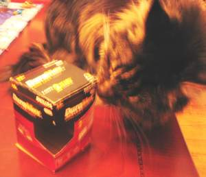
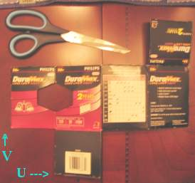
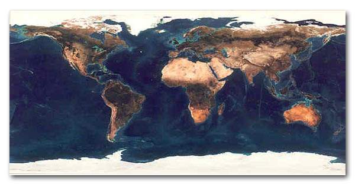
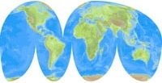
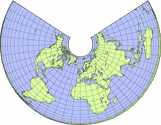

Overview¶
The most flexible way of mapping a 2D texture over a 3D object is a process called “UV mapping”. In this process, you take your three-dimensional (X, Y & Z) mesh and unwrap it to a flat two-dimensional (X & Y ... or rather, as we shall soon see, “U & V”) image. Colors in the image are thus mapped to your mesh, and show up as the color of the faces of the mesh. Use UV texturing to provide realism to your objects that procedural materials and textures cannot do, and better details than Vertex Painting can provide.
UVs Explained¶

Box being inspected. |

Box mapped flat. |
The best analogy to understanding UV mapping is cutting up a cardboard box. The box is a three-dimensional (3D) object, just like the mesh cube you add to your scene.
If you were to take a pair of scissors and cut a seam or fold of the box, you would be able to lay it flat on a tabletop. As you are looking down at the box on the table, we could say that U is the left-right direction, is V is the up-down direction. This image is thus in two dimensions (2D). We use U and V to refer to these “texture-space coordinates” instead of the normal X and Y, which are always used (along with Z) to refer to the three dimensional space (3D).
When the box is reassembled, a certain UV location on the paper is transferred to an (X, Y, Z) location on the box. This is what the computer does with a 2D image in wrapping it around a 3D object.
During the UV unwrapping process, you tell Blender exactly how to map the faces of your object (in this case, a box) to a flat image in the UV/图像编辑器. You have complete freedom in how to do this. (Continuing our previous example, imagine that, having initially laid the box flat on the tabletop, you now cut it into smaller pieces, somehow stretch and/or shrink those pieces, and then arrange them in some way upon a photograph that is also lying on that tabletop).
Cartography 例子¶
Cartographers (map makers) have been dealing with this problem for millennia. A cartography (map-making) example is creating a projection map of the whole world. In cartography, we take the surface of the earth (a sphere) and make a flat map that can be folded up into the glove compartment aboard the space shuttle. We “fill in” spaces toward the poles, or change the outline of the map in any of several ways:

Mercator Projection. |

Mollweide Projection. |

Albers-equal Projection. |
{kind=link}
{kind=link}
{kind=link}
Each of these is an example of a way to UV map a sphere. Each of the hundred or so commonly accepted projections has its advantages and disadvantages. Blender allows the same thing anyway we want to, on the computer.
On more complex models (like seen in the earth map above) there pops up an issue where the faces cannot be cut, but instead they are stretched in order to make them flat. This helps making easier UV maps, but sometimes adds distortion to the final mapped texture. (Countries and states that are closer to the North or the South Pole look smaller on a flat map than do ones which are close to the Equator.)
Half-Sphere 例子¶
{kind=link}
3D Space (XYZ) versus UV Space (click to enlarge).
In this image you can easily see that the shape and size of the marked face in 3D space is different in UV space.
This difference is caused by the “stretching” (technically called mapping) of the 3D part (XYZ) onto a 2D plane (i.e the UV map).
If a 3D object has a UV map, then, in addition to the 3D-coordinates X, Y, and Z, each point on the object will have corresponding U and V coordinates. (P in the image above is an example of how a point on a 3D object might be mapped onto a 2D image.)
Advantages of UVs¶
While procedural textures (described in the previous chapters) are useful-they never repeat themselves and always “fit” 3D objects-they are not sufficient for more complex or natural objects. For instance, the skin on a human head will never look quite right when procedurally generated. Wrinkles on a human head, or scratches on a car do not occur in random places, but depend on the shape of the model and its usage. Manually-painted images, or images captured from the real world gives more control and realism. For details such as book covers, tapestry, rugs, stains, and detailed props, artists are able to control every pixel on the surface using a UV Texture.
A UV map describes what part of the texture should be attached to each polygon in the model. Each polygon’s vertex gets assigned to 2D coordinates that define which part of the image gets mapped. These 2D coordinates are called UVs (compare this to the XYZ coordinates in 3D). The operation of generating these UV maps is also called “unwrap”, since it is as if the mesh were unfolded onto a 2D plane.
For most simple 3D models, Blender has an automatic set of unwrapping algorithms that you can easily apply. For more complex 3D models, regular Cubic, Cylindrical or Spherical mapping, is usually not sufficient. For even and accurate projection, use seams to guide the UV mapping. This can be used to apply textures to arbitrary and complex shapes, like human heads or animals. Often these textures are painted images, created in applications like the Gimp, Photoshop, or your favorite painting application.
Note
Games
UV mapping is also essential in the Blender game engine, or any other game. It is the de facto standard for applying textures to models; almost any model you find in a game is UV mapped.